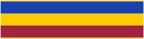
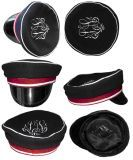
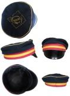
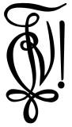
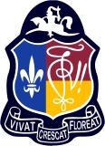

Studentai skautai pasiryžę tęsti skautavimą, gilinantis į ideologines skautavimo savybes ir jų pritaikymą asmeniniame, akademiniame, organizaciniame ir profesiniame gyvenime. Todėl dar 1924 m. šūkiu buvo pasirinktas „Ad Meliorem!“, seno lotyniško posakio „Ad meliorem vertamur“ sutrumpinimas, kuris išvertus reiškia „Gerinkime, darykime geriau!“
Perpetinė juosta yra vienas svarbiausių korporantų atributų. Jų atsiradimo istorija siekia viduramžius, kuomet kilmingi ir turtingi studentai tokiomis juostomis prie šono pasirišdavo špagą. Šiandien korporantai špagų nebenešioja, tačiau juostos liko kaip korporacijos vertybes atspindintis atributas. Kiekviena korporacija pasirenka savo spalvas, simbolizuojančias puoselėjamus idealus.
Studentai skautai yra susibūrę į dvi korporacijas: Akademinę skaučių draugovę (ASD), vienijančią seses, ir Studentų skautų korporaciją „Vytis“, jungiančią brolius. Abiejų korporacijų filisteriai susibūrę į Skautų filisterių sąjūdį. Ir nors tradiciškai abi korporacijos veikia drauge, visgi turi atskirą simboliką ir kai kurias savitas tradicijas. Korporacijos turi savo idealus, kuriuos simbolizuoja juostų spalvos.
Tamsiai mėlyna spalva simbolizuoja idealų siekimą, raudona – meilę Dievui, Tėvynei ir artimui, balta – jaunatvišką entuziazmą.
Mėlyna (dangaus spalva) simbolizuoja kilnumą, geltona (aukso spalva) – taurumą, violetinė (uolų spalva) – tvirtumą.
ASD ir korp! Vytis turi savo korporacijų ženklelius. Sesių ženklelis - metalinis dviejų spalvų lygiašonis: tamsiai raudona ir balta juosta išilgai ženklelio, o viduryje Studenčių Skaučių Draugovės monograma (SD). Brolių - mėlynas rombas su sidabro spalvos lelija viduryje.
ASD ženklelį gali nešioti tik tikrosios narės prie kasdieninio ar išeiginio rūbo kairiajame, o filisterės dešiniajame šone. Korp!Vytis ženklelį segi senjorai kairiajame, filisteriai – dešiniajame švarko atlape. Kandidatės ir junjorai ženklelio segėti negali.
Pirmame ASS suvažiavime Amerikoje 1950 m. rengėjos Klivlendo ASD "Šatrijos Raganos" draugovės sesės nutarė paruošti visą Akademinį Skautų Sąjūdį vienijančią simbolinę dovaną, akademinį kaklaraištį. Sesių ir brolių bendrumui pažymėti buvo paimta iš abiejų korporacijų spalvų po vieną: iš sesių - tamsiai mėlyna ir iš brolių - violetinė, kurios juostomis lenkia smėlio spalvos trikampį. Baltos (ASD) ir auksinės (korp!Vytis) spalvos mišinys davė smėlio spalvą, kuri taip pat priminė Palangos pajūrio smėlį. Šių spalvų junginys simbolizuoja veiklos, tikslų ir ideologinio įsipareigojimo bendrumą.
Kaklaraištį gali ryšėti visi skautišką įžodį davę ASD, korp!Vytis nariai bei filisteriai. Kaklaraištis ryšimas akademikų iškylose ir stovyklose.
Nuo seno likusi tradicija visiems studentams korporantams nešioti kepurėles su matiku. Universiteto organizacijos bei korporacijos turi skirtingų spalvų ir ženklų kepurėles, iš kurių galima atpažinti korporaciją, kuriai studentas priklauso. ASD kepuraitė yra tamsiai mėlynos spalvos su tamsiai raudonu ir baltu graiželiu (kepurės lankas apie galvą), o viršuje sidabriniais siūlais išsiuvinėta monograma. Korp!Vytis kepurėlė yra tamsiai mėlynos spalvos su violetinės, geltonos ir vėl violetinės spalvų graiželiu. Viršuje auksiniais siūlais išsiuvinėtas korp!Vytis cirkulis.
 Kepurėlė dėvima tik tikrųjų narių bei garbės narių kartu su spalvomis prie iškilmių ir pagal tradiciją prie skautų uniformos.
Cirkulis yra vienas iš korporacinių ženklų, kuris simbolizuoja jo priklausomybę ir prisirišimą korporacijai. Tai kaligrafinis ženklas – monograma. Jame užkoduotos tam tikros raidės. Korp!Vytis cirkulyje slypi lotyniškas šūkis "Vivat, Crescat, Floreat Vytis in aeternum!" (liet. Tegyvuoja, teklesti, težydi Vytis amžinai!). ASD cirkulio neturi.
Cirkulį gali naudoti senjorai, filisteriai bei garbės nariai, pasirašydami korporacijos vardu arba norėdami pabrėžti priklausymą korporacijai. Tuomet cirkulis rašomas po vardo arba parašo. Jis visuomet rašomas vienu judesiu, neatitraukiant rankos nuo popieriaus. Pagal tradiciją cirkulį prie savo parašo naujasis senjoras pirmą kartą deda pasirašydamas pasižadėjimo lapą. Taip pat cirkulis yra naudojamas korp! Vytis vėliavoje, ant korp! Vytis dokumentų ir pasižadėjimo lapų, išsiuvinėtoje emblemoje (ant tamsiai mėlyno švarko) ir ant kitos korp! Vytis uniforminės aprangos.
Korporacijos skydelis yra siuvinėta emblema, atspindinti korporacijos vertybes ir simboliką. Korp! Vytis proginiame skydelyje išsiuvinėtas Vytis, korporacijos spalvos, ženklelis, cirkulis ir šūkis. Jis segimas senjorų, filisterių ir garbės narių prie iškilmių uniformos, kairėje krūtinės pusėje ant švarko. ASD skydelio neturi.
Skirtingomis progomis akademikai dėvi iškilmių arba stovyklinę uniformą. Oficialių ASD ir Korp!Vytis, korporantiškų, studentiškų, skautiškų renginių, laidotuvių, vestuvių ir minėjimų metu dėvima iškilmių uniforma. ASD ir Korp! Vytis stovyklose arba pastovyklėse, kitų skautų organizacijų stovyklose dėvima stovyklos uniforma.
Vėliava yra korporacijos tikslų, idealų ir idėjų simbolis. Ji naudojama iškilmingose akademikų sueigose ir renginiuose (pvz., Metinėje šventėje), eisenose ir paraduose, stovyklose, kitų korporacijų renginiuose, laidotuvėse (laidojant ASD, korp!Vytis ir SFS narį, mecenatą ar kitą skautams nusipelniusį asmenį).
Dabartinė ASD vėliava buvo pašventinta 2007 spalio 13 d. Kauno Kristaus Prisikėlimo bažnyčioje. Vėliavos krikštatėviai – fil. Jolita Buzaitytė-Kašalynienė ir korp!Vytis garbės narys gen. mjr. Jonas Kronkaitis. Vėliava yra tamsiai mėlynos spalvos su sidabro spalvos ornamentais. Vienoje vėliavos pusėje išsiuvinėta korporacijos monograma ir šūkis „Ad meliorem!“. Kitoje pusėje centre ratu išsiuvinėtas korporacijos pavadinimas „Akademinė skaučių draugovė“, apačioje – įkūrimo data, šonuose – korporacijos spalvos. Vėliavos kraštai puošiami sidabriniais kutais. Viršuje ant koto rišama trispalvė juosta.
Dabartinė korp!Vytis vėliava buvo pašventinta 2004 m. spalio 16 d. Kauno Šv. Pranciškaus Ksavero (jėzuitų) bažnyčioje. Vėliavos krikštatėviai – mecenatė Kazimiera Galaunienė ir korp!Vytis garbės narys Algirdas Avižienis. Korp! Vytis vėliava yra tamsiai mėlynos spalvos su aukso spalvos ornamentais. Vienoje vėliavos pusėje išsiuvinėta balta lelijėlė mėlyno rombo fone ir šūkis „Ad meliorem!“. Kitoje pusėje centre ratu išsiuvinėtas korporacijos pavadinimas Studentų skautų korporacija „Vytis“, rato viduryje – cirkulis, apačioje – įkūrimo data, šonuose – korporacijos spalvos. Vėliavos kraštai puošiami auksiniais kutais. Viršuje ant koto rišama trispalvė juosta.